Contemporary Arts · National Artists for Dance
Presented by Edrosa, Genesis Matthew
Francisca Reyes Aquino saved the dances of the barrio. Alice Reyes took Filipino movement into modern dance. Both were named National Artists for Dance.
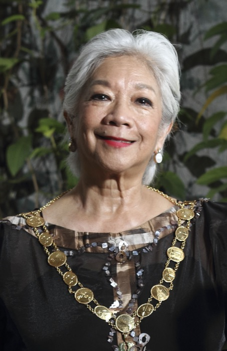
National Artist for Dance · 2014
Alice Reyes made a lasting impact on the development and promotion of contemporary dance in the Philippines.
Her biggest contribution
She developed a distinctly Filipino modern dance idiom. She used inherently Filipino materials and subjects, and expressed them through a combination of movements and styles from:
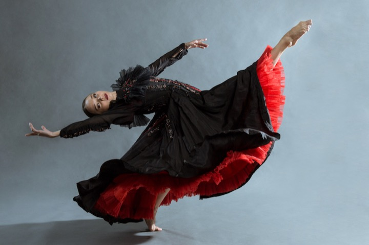
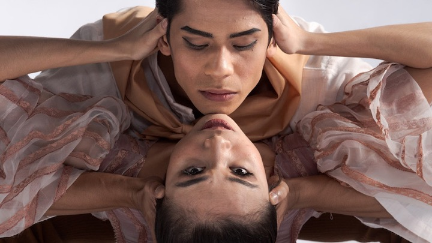
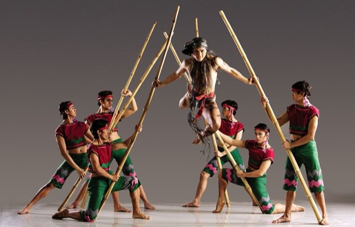
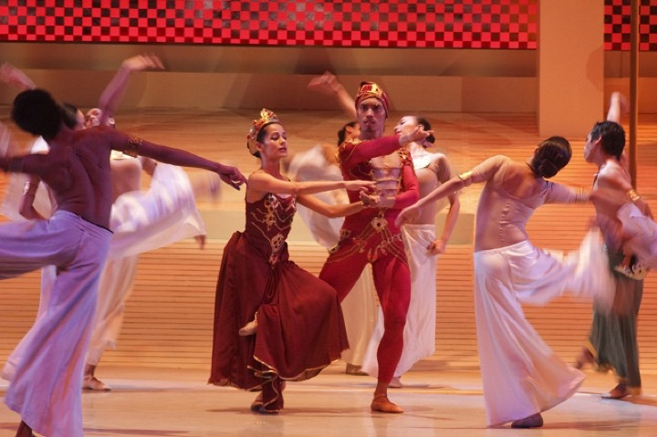
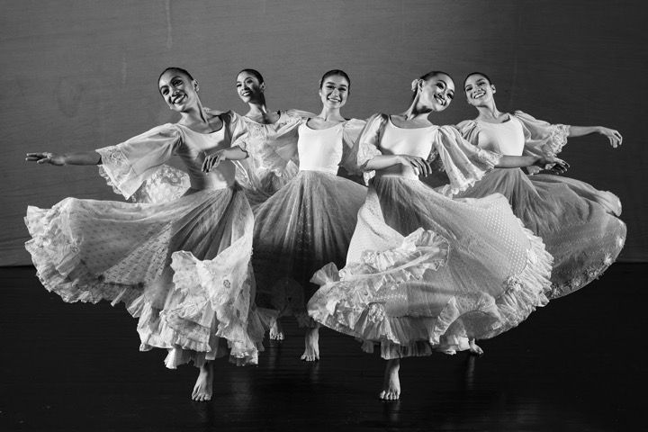
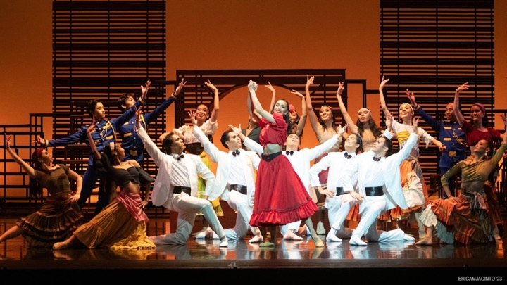
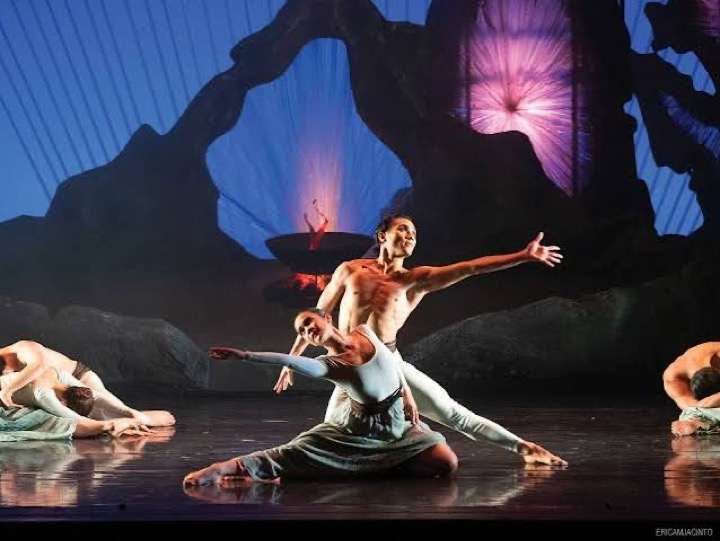
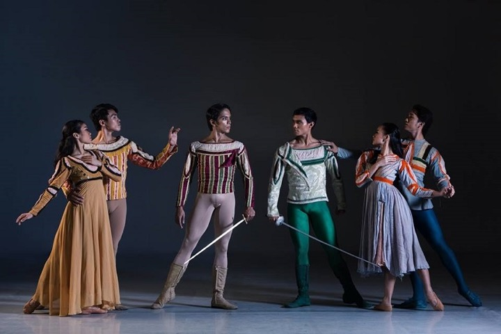
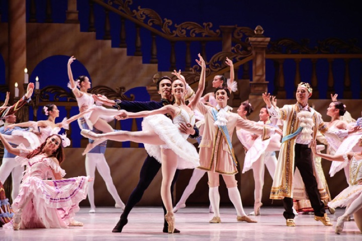
Production photos were collected online for this class report. Rights belong to Ballet Philippines and the original photographers.
Beyond the module
Born October 14, 1942. Her company staged the first modern dance concert at the CCP Main Theater in February 1970. With Eddie Elejar she founded the company that became Ballet Philippines.
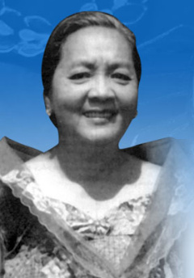
National Artist for Dance · 1973
She researched the unrecorded forms of local celebration, ritual and sport. That research became her 1926 thesis, “Philippine Folk Dances and Games.”
How her work reached every school
In the 1940s she served as supervisor of physical education at the Bureau of Education. The Bureau distributed her work and adopted the teaching of folk dancing to promote awareness of our cultural heritage.
In 1935, musician Antonio R. Buenaventura (also a National Artist) joined her research on folk songs and dances, which helped make them popular.
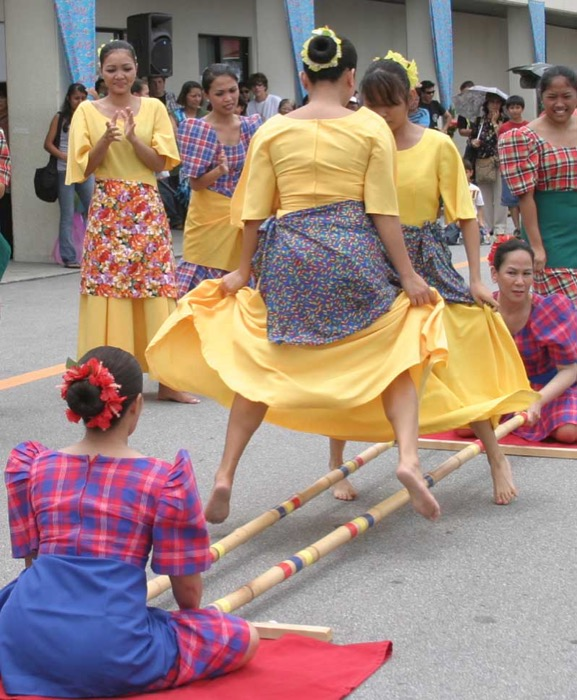
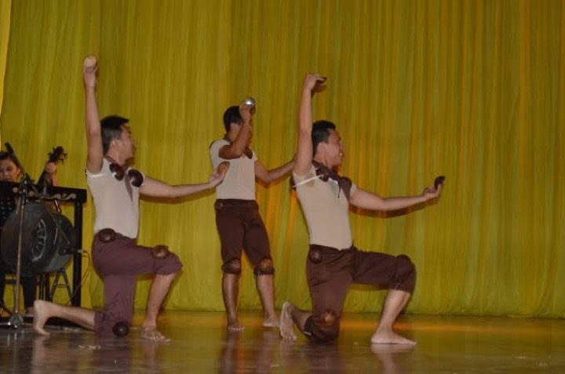
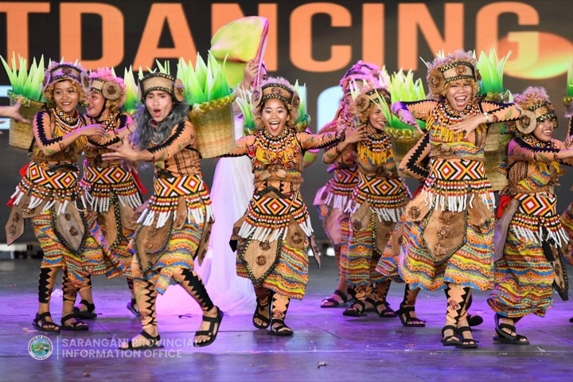
Tinikling photo: U.S. Air Force / Senior Airman Nestor Cruz via Wikimedia Commons, public domain. Other dance photos were collected online for this class report; rights belong to their owners.
Beyond the module
Lived March 9, 1899 – November 21, 1983. She was the first National Artist for Dance. She began collecting dances in 1921 by travelling to remote barrios in Central and Northern Luzon. In 2019, Google honored her 120th birthday with a Google Doodle.
Side by side
| Francisca Reyes Aquino | Alice Reyes | |
|---|---|---|
| Named | 1973 | 2014 |
| Region | Region 3 – Central Luzon | NCR – Manila |
| Dance form | Folk dance | Contemporary / modern dance |
| Approach | Research and record the dances of ordinary Filipinos | Create new works by blending indigenous, modern and ballet styles |
| Legacy | Folk dancing taught in schools nationwide | A Filipino voice in modern dance |
Francisca preserved the Filipino dance tradition. Alice reinvented it for the modern stage.
Timeline
Check yourself